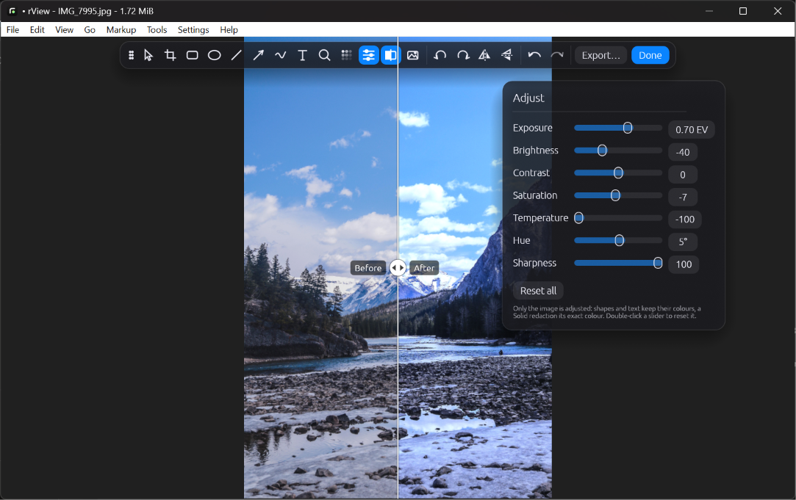

Adjust
Fix the light. See the difference.
Exposure, brightness, contrast, saturation, temperature, hue and sharpness, with a divider you drag between before and after.
- \
- Compare before / after
- Double-click
- Reset a slider

Adjust
Exposure, brightness, contrast, saturation, temperature, hue and sharpness, with a divider you drag between before and after.